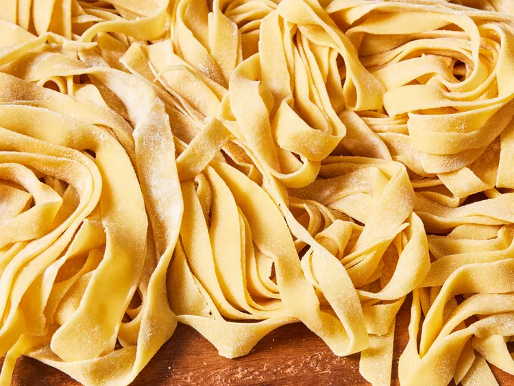

Fresh Pasta
Home

Fresh Pasta From Scratch
Fresh pasta. Need I say more? Making your own pasta not only eliminates the ingredients and preservatives
found in store-bought pasta, but also gives one the sense of accomplishment of making something simple,
yet delicious. Using only three ingredients - and a little elbow grease - you can make your own pasta, in
whatever style or shape you desire. This recipe utilizes a pasta roller, but the basic fettuccine shape can
be acheived using a rolling pin and kitchen knife.
- Eggs
- Flour, plus extra for dusting (Pasta Flour or 00 Flour works best,
but AP Flour will do fine)
- Salt
- This pasta recipe uses a ratio of 1 egg per 100 grams of flour. Prep your
desired amount of ingredients based on this ratio.
- Wash hands.
- Pour flour on a clean working area, creating a pile. Create a well in the pile.
- Crack eggs directly into the flour well.
- Add a pinch or two of salt, depending on your egg-to-flour ratio.
- Using a fork, whisk the eggs within the well until smooth.
- After whisking, slowly incorporate flower to the eggs, starting from the inner well.
- After enough flour has been mixed-in, a loose dough will start to form. At this point you can ditch the fork.
- Begin incorporating the rest of the flour to the dough, and knead for 5 minutes until smooth.
- Form dough into a tight ball. Place under a damp towel, and allow to rest for at least 20 minutes (the longer the dough rests, the more time the gluten has
to relx, creating a pliable dough).
- Once dough has had time to rest, sprinkle a small amount of flour on the working area, and knead for another 3-5 minutes, and allow more time to rest. This process
strengthens the dough, and can be repeated a third time, if desired.
- Sprinkle a little more flour on the working area, and using a rolling pin, roll dough ball into a thick disc, then cut into four pieces. Set three of these peices
aside for later, or freeze for up to 1 month.
- Roll-out the piece of pasta dough until it reaches a thickness of about 1/8 to 1/4 of an inch. This doesn't need to be exact, as the pasta roller will do the
majority of the remaining work.
- Mount and set your pasta roller to the lowest numbered setting. This typically begins with a 1 and goes up to 8.
- To prepare the pasta dough for the roller, trim the dough into a rectagular shape, dust with a pinch of flour, and fold in half.